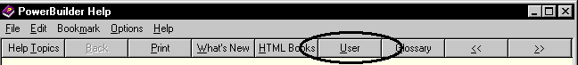

There are two ways to integrate online Help for your user-defined functions, user events, and user objects into the PowerBuilder development environment:

When you select the name of a function or place the cursor in the function name in the Script view and press Shift + F1:
If you work within the PowerBuilder defaults, you must:
Here are details on how to build online Help into the PowerBuilder environment.
 To launch online Help for PowerBuilder developers
from the User button:
To launch online Help for PowerBuilder developers
from the User button:
Create your online Help file using Microsoft Word and the Microsoft Help Workshop or other Help authoring tool.
Rename the PBUSR105.HLP and PBUSR105.CNT files that were installed with PowerBuilder. Be sure to rename the original PBUSR105.CNT file even if you do not provide your own contents file.
Save the compiled Help file and optional contents file in your PowerBuilder Help directory. Make sure your Help file is named PBUSR105.HLP and your contents file is named PBUSR105.CNT.
Your Help file will display when you click the User button.
 To create context-sensitive Help for user-defined
functions:
To create context-sensitive Help for user-defined
functions:
When you create a user-defined function, give the name of the function a standard prefix. The default prefix is uf_ (for example, uf_calculate).
For each user-defined function Help topic, assign a search keyword (a K footnote entry) identical to the function name.
For example, in the Help topic for the user-defined function uf_CutBait, create a keyword footnote uf_CutBait. PowerBuilder uses the keyword to locate the correct topic to display in the Help window.
Compile the Help file and save it in the PowerBuilder Help directory.
You can specify a different file name for context-sensitive Help by changing the value of the UserHelpFile variable in your PB.INI file. To use the variable, your Help file must be in the PowerBuilder Help directory.
 To specify a different
file name for context-sensitive Help:
To specify a different
file name for context-sensitive Help:
Open your PB.INI file in a text editor.
In the [PB] section, add a UserHelpFile variable, specifying the name of the Help file that contains your context-sensitive topics. The format of the variable is:
UserHelpFile = helpfile.hlp
Specify only the file name. A full path name designation will not be recognized.
You can prefix your user-defined functions with a standard prefix other than the default uf_ prefix. You define the prefix you want to use by entering the UserHelpPrefix variable in your PB.INI file.
 To use a different prefix for user-defined functions:
To use a different prefix for user-defined functions:
Open your PB.INI file in a text editor.
In the [PB] section, add a UserHelpPrefix variable, specifying the value of your prefix. Use this format:
UserHelpPrefix = yourprefix_
The prefix you provide must end with the underscore character.